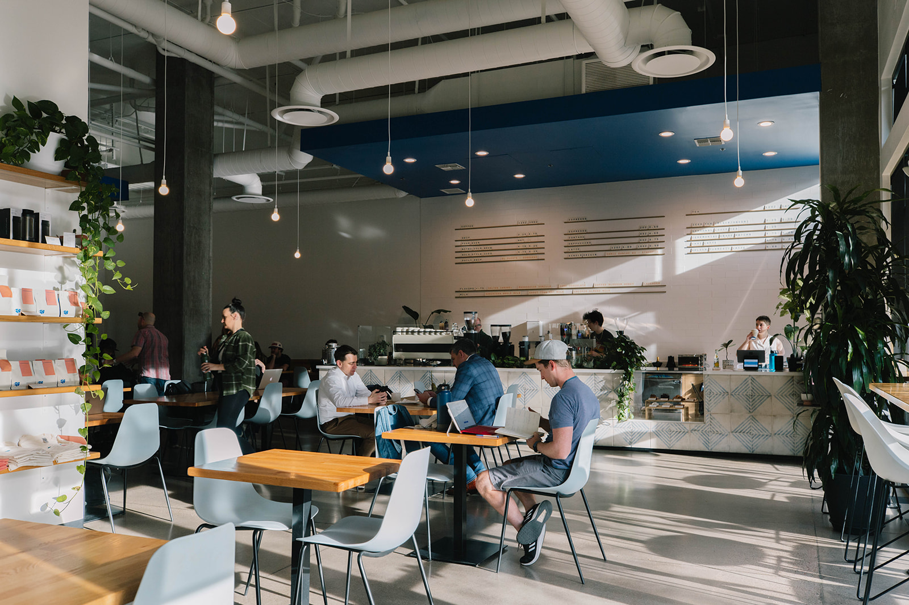

Establishments in Phoenix
- Harumi
- A modern Japanese restaurant offering a fusion of traditional and contemporary dishes, Harumi is known for its fresh sushi, sashimi, and innovative rolls. The elegant ambiance and exceptional service make it a perfect spot for a special night out.
- Lovebite Dumpling
- Specializing in handmade dumplings, Lovebite Dumpling offers a variety of flavors and fillings, from classic pork to vegetarian options. The fast service and friendly staff create a welcoming environment for diners to enjoy these delicious bites. This company offers a unique walk-up window, making it a convenient stop for a quick and tasty meal. This woman-owned business is a must-visit for dumpling and noodle enthusiasts.
- IL Bosco Pizza
- Known for its authentic wood-fired pizzas, IL Bosco Pizza serves up traditional Italian flavors with a modern twist. The cozy atmosphere and rustic decor provide a charming setting to enjoy their signature pies, made with fresh ingredients and creative toppings. This family-owned establishment prides itself on delivering a genuine Italian dining experience in the heart of not only Downtown Phoenix, but also Scottsdale.
- The Womack
- A trendy cocktail bar that combines Southern comfort food with a modern twist, The Womack is famous for its ladie's night, craft cocktails, and vibrant atmosphere. The eclectic menu features a variety of dishes that cater to different tastes, making it a popular spot for both locals and visitors looking for a fun dining experience with live music.
- Moxie Coffee Shop
- A trendy industrial coffee shop that offers a wide selection of specialty coffees, teas, and light bites, Moxie Coffee Shop is known for its welcoming atmosphere and friendly staff. The shop features locally roasted beans and artisanal pastries, making it a favorite spot for coffee enthusiasts and those seeking a relaxing place to work or socialize. The modern decor and plant wall add to its charm.


